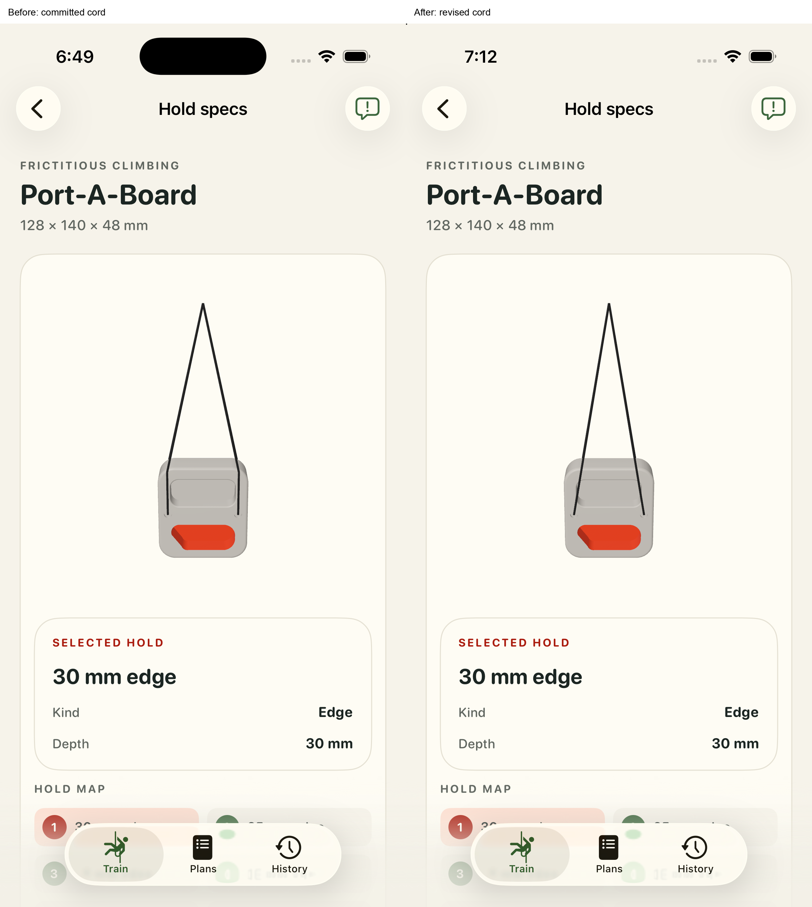
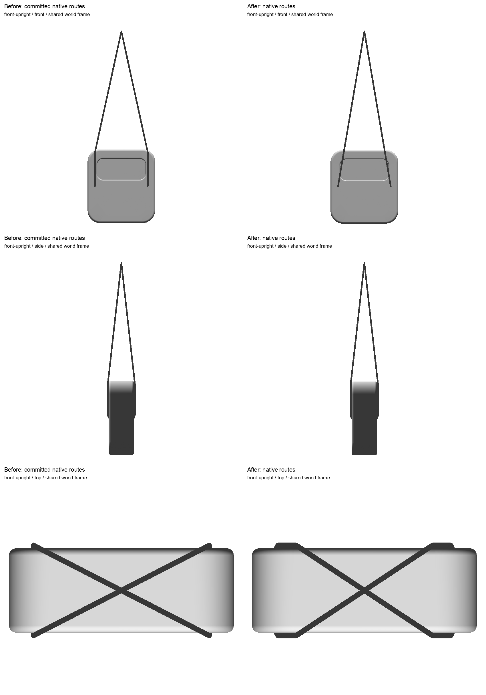
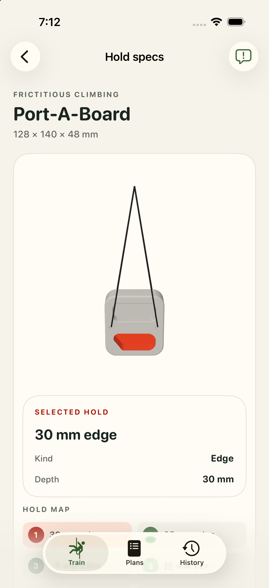
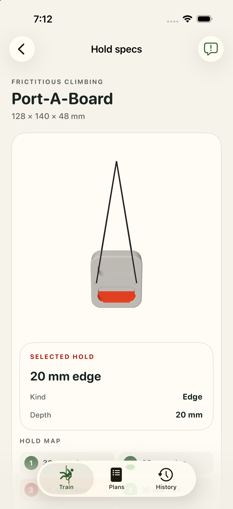
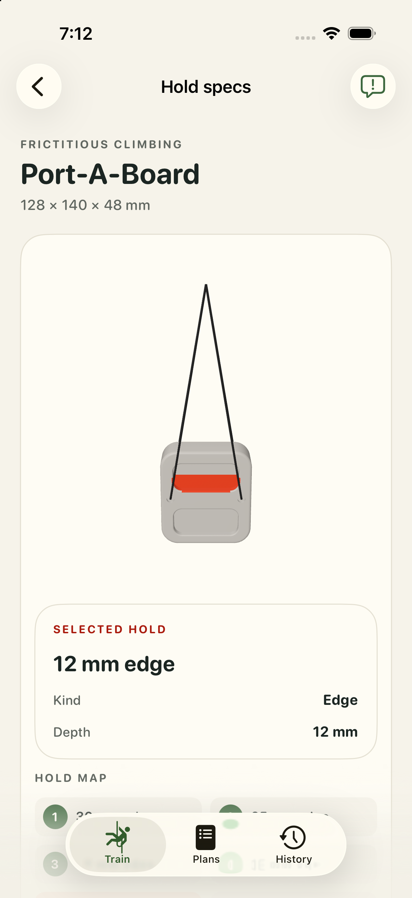
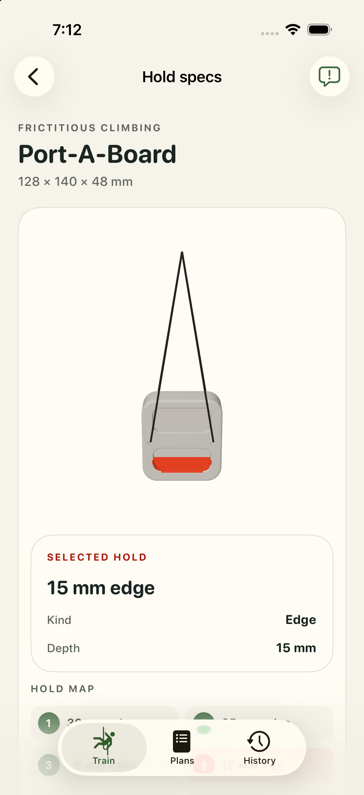
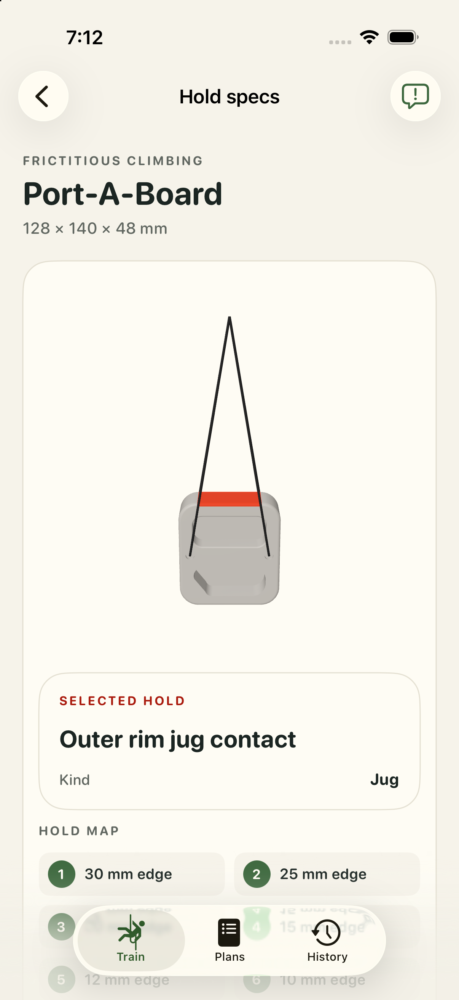
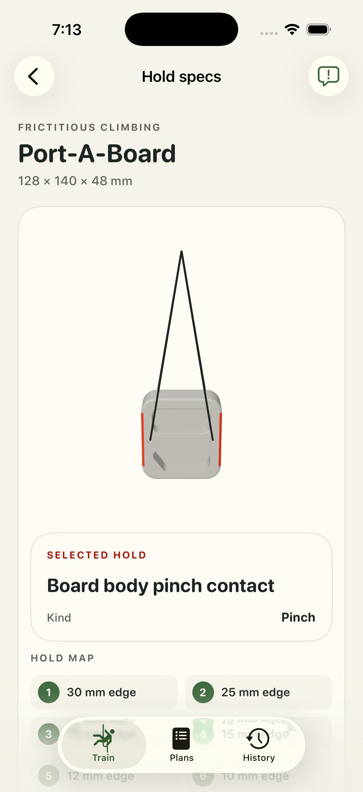

Shown revised cord routing accepted with Y. Human review record. Before is committed revision 3fd0418d. The native body is unchanged; cord routes and hanging height use the actual support and native openings.


All six poses: front, side, top and oblique comparisons. Source and validation report.





